Git知识总结¶
一、Git常用命令¶
1、列表¶
| 命令 | 说明 |
|---|---|
git checkout -B localBranchName origin/remoteBranchName |
新建远程分支对应的本地分支 |
git branch -a | grep feature |
查看分支名称包括feature的分支 |
git branch | xargs git branch -D |
删除出当前分支外的其他本地分支 |
git branch --set-upstream-to=origin/<branch> <localbranch> |
设置分支localbranch跟踪远程分支branch |
git push --set-upstream origin master |
本地分支首次推送到远程仓库 |
git checkout -b temp <commit id> |
根据commit id创建temp分支 |
2、个人记录¶
git checkout -B localBranchName origin/remoteBranchName
该命令可以分成三步
1:创建分支
git branch localBranchName
2:切换分支
git checkout localBranchName
3:设置本地分支跟踪远程分支
git branch --set-upstream-to=origin/remoteBranchName localBranchName
二、Git基本知识¶
1、GitHub添加SSH公钥¶
执行命令ssh-keygen生成公钥
$ ssh-keygen
Generating public/private rsa key pair.
Enter file in which to save the key (/c/Users/frost2/.ssh/id_rsa):
/c/Users/frost2/.ssh/id_rsa already exists.
Overwrite (y/n)? y
Enter passphrase (empty for no passphrase):
Enter same passphrase again:
Your identification has been saved in /c/Users/frost2/.ssh/id_rsa.
Your public key has been saved in /c/Users/frost2/.ssh/id_rsa.pub.
The key fingerprint is:
SHA256:ht3k1v/x4xBn7zHO58G91tYkfBjuDGW7HKfyrBO2JjY frost2@frost2-pc
The key's randomart image is:
+---[RSA 2048]----+
| |
| |
| . |
| o + . + |
| . S + .* * |
| . . +.% *|
| . O.#=|
| E =.X=%|
| . +.==BB|
+----[SHA256]-----+
查看公钥（注意保存好自己的公钥，该公钥为示例值）
$ cat /c/Users/frost2/.ssh/id_rsa.pub
ssh-rsa AAAAB3NzaC1yc2EAAAADAQABAAABAQC3SGL/P6NLLoV4f+nAZlFf4Rc86xNtnHoLrnPEcmW2u+HhlEfDz1yCPOuTu//cDVvrvDUDg/Tzz5w9feCch+Yq/ehq9Chy+3CoRD/DsYklHTZItS39nSTmPw1S/NQJYaQVTTPYhvP947mb6ThS/86M2TSVi1zvfAuVLDEuA1V3oqkXm1Y0yFclc4M2AjRkABCkCrrydG08Da0UUNM5fs8ZtaNKZjsuGctTvbfhYmj5pArrdhwdG6S3Fl56xpuhcWY6vYk06rpKSxyilaL++G559FBmjSThwx1o2CrcyAvw8ISMo7LbRf1B2S60+vf9x+I7Y2l1ODY3TMguBQK8gqkR frost2@frost2-pc
GitHub添加公钥
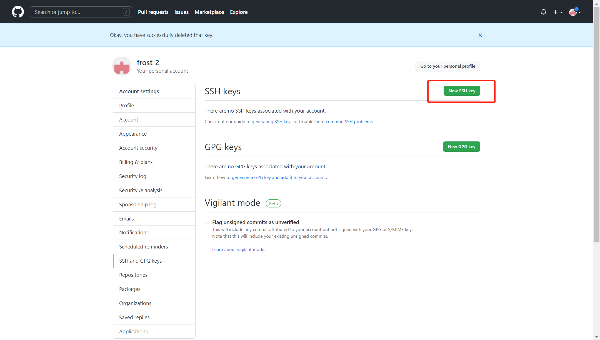
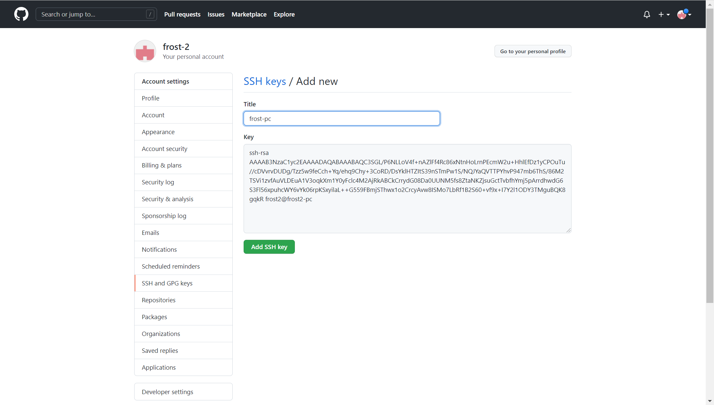
2、merge和rebase¶
在Git中合并两个分支的代码的主要方法有两种：merge和rebase。现假设有如下两个分支：
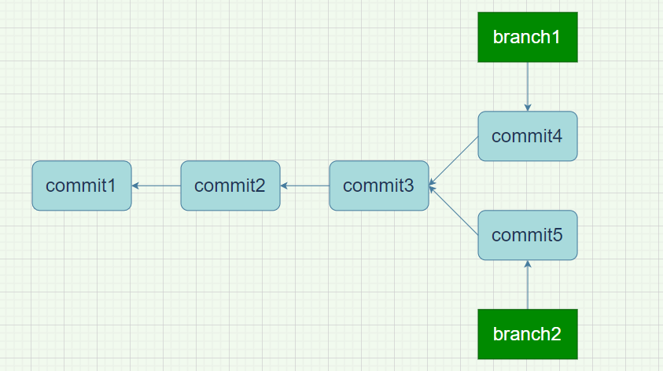
2.1、merge¶
如果我们使用merge将branch2合并到branch1，那么它会把两个分支的最新快照（commit4 和 commit5）以及二者最近的共同祖先（commit3）进行三方合并，合并的结果是生成一个新的快照（并提交）。
具体操作如下：
- 切换到branch1：
git checkout branch1 - 将branch2合并到当前分支(branch1)：
git merge branch2
合并后如下图所示：
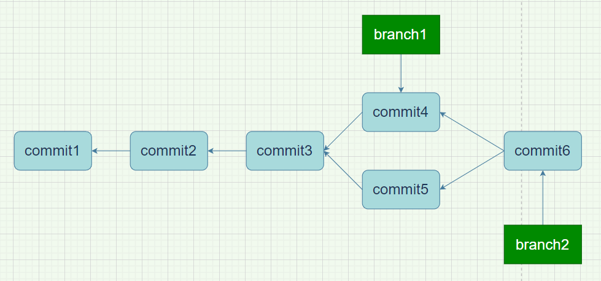
2.2、rebase¶
如果使用rebase将branch2合并到branch1的话，首先它会找到两个分支共同的祖先commit3，对比当前分支branch1相对于该祖先的历次提交，提取相应的修改并存为临时文件， 然后将当前分支指向目标分支branch2最新的commit节点，最后将临时文件的修改依次应用。
具体操作如下：
- 切换到branch1：
git checkout branch1 - 将branch2合并到当前分支(branch1)：
git rebase branch2
合并后如下图所示：
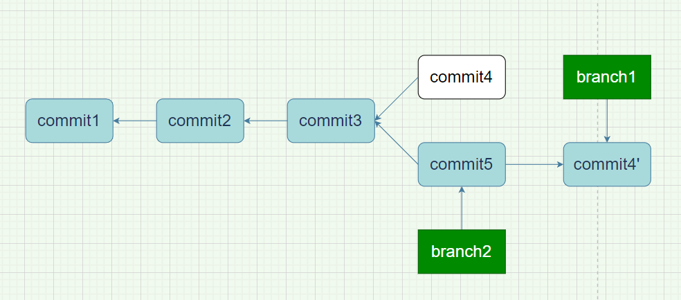
2.3、交互式的rebase¶
我们可以通过git rebase -i <startcommit>来进行交互式的rebase操作，通过它我们可以修改分支的提交历史。
现有分支feature_2112，其近3次提交历史如下。
$ git log --graph -n3
* commit 992d6e9701f77e6eb4e2f9920667e8c44d67df65 (HEAD -> feature_2112)
| Author: frost2 <frost2@163.com>
| Date: Wed Dec 29 15:03:58 2021 +0800
|
| rebase命令修改
|
* commit bc9a90b1c28db88b854777965bb616a4f94a4cbc
| Author: frost2 <frost2@163.com>
| Date: Wed Dec 29 14:42:14 2021 +0800
|
| rebase/merge命令解释
|
* commit 9be8006e35c6e6059b0253dd76ba29d64924e263
| Author: frost2 <frost2@163.com>
| Date: Sun Dec 26 18:30:11 2021 +0800
|
| 新增分支合并冲突解决步骤
2.3.1、打开交互文件¶
如果我们想要合并最近两次的提交记录，执行命令git rebase -i bc9a90bc或者git rebase -i HEAD~2，就会打开如下文件
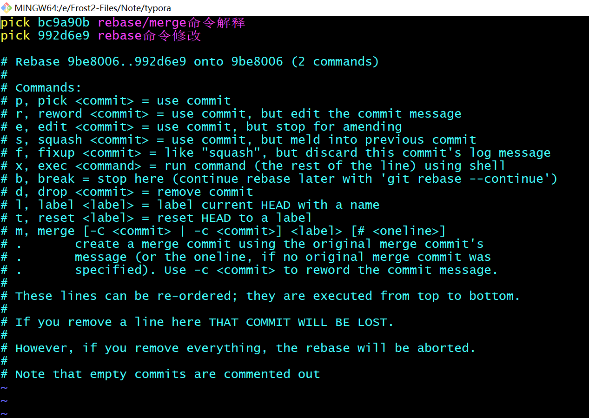
部分参数说明如下：
| 参数 | 说明 |
|---|---|
| pick | 采用该提交 |
| reword | 采用该提交，但是修改提交备注信息 |
| edit | 采用该提交，但要求修改提交记录的信息，包括备注、用户和邮箱 |
| squash | 采用该提交，但是会把该提交合并到前一次提交中 |
| fixup | 类似于squash，但是会丢弃对应提交的日志信息 |
| exec | 实行shell脚本 |
| drop | 删除该commit |
2.3.2、编辑交互文件¶
编辑文件，将最后一次提交合并到前一次提交。
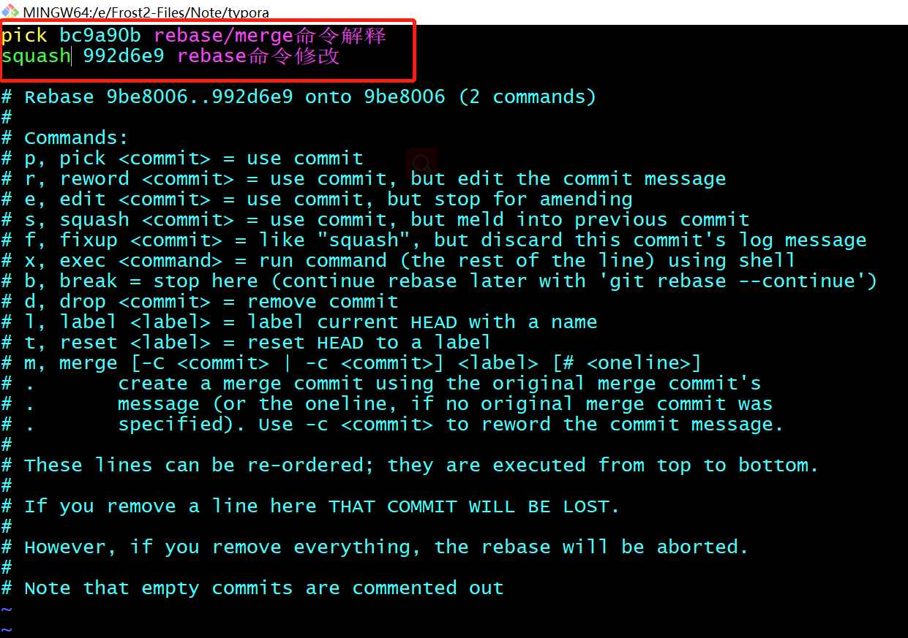
编辑完成保存退出，会弹出另一个文件用于合并两次提交的备注信息，如下所示
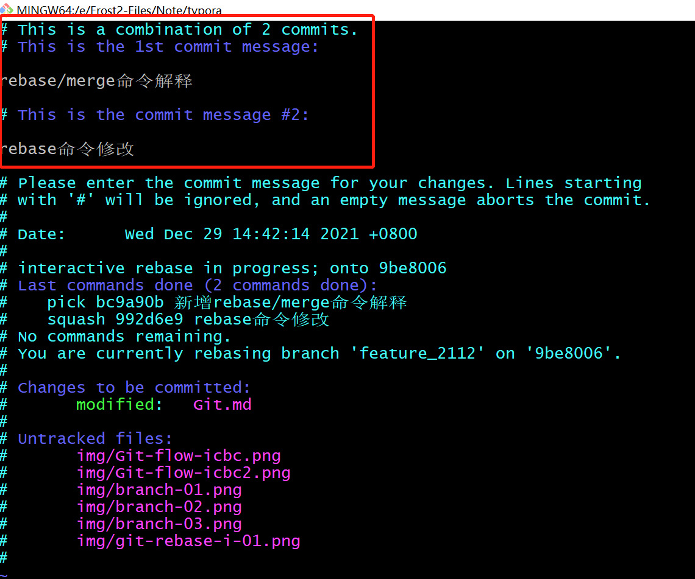
修改合并两次提交信息如下：

保存退出该文件后，最开始执行的git rebase -i HEAD~2命令成功结束。
$ git rebase -i HEAD~2
[detached HEAD e6acd2a] 新增rebase/merge命令解释
Date: Wed Dec 29 14:42:14 2021 +0800
1 file changed, 33 insertions(+), 1 deletion(-)
Successfully rebased and updated refs/heads/feature_2112.
至此我们成功的将最近的两次合并合并为同一次提交，此时提交历史如下：
$ git log --graph -n2
* commit e6acd2a7bdd30fb7b589ff972e61c6f63ca71590 (HEAD -> feature_2112)
| Author: frost2 <frost2@163.com>
| Date: Wed Dec 29 14:42:14 2021 +0800
|
| 新增rebase/merge命令解释
|
* commit 9be8006e35c6e6059b0253dd76ba29d64924e263
| Author: frost2 <frost2@163.com>
| Date: Sun Dec 26 18:30:11 2021 +0800
|
| 新增分支合并冲突解决步骤
3、冲突合并¶
Git冲突一般有两种情况，一种是拉取分支时，你本地修改的文件和远程文件出现冲突，另一种情况是分支合并时，在两个分支中都对某个文件进行了修改。
3.1、代码冲突合并¶
当我们本地修改了某个文件并且已经commit，同时有人也改了该文件并且已经提交到了远程仓库，这时如果我们拉取代码就会报合并冲突。一般情况下解决这种冲突应该以远程分支代码为准，将自己的变更增加上去，然后合并代码。具体步骤看后文。
Git拉取合并代码分为merge和rebase两种方式，git pull默认使用merge方式，即默认情况下git pull = git fetch + git merge，我们可以通过参数--rebase设置pull使用rebase方式，当然我们也可以通过命令git config --global pull.rebase true，将pull操作的合并方式改为rebase。
3.1.1、git pull --rebase¶
frost2@frost2-pc MINGW64 /e/Frost2-Files/IdeaWorkSpace/frost2 (master)
$ git pull --rebase
First, rewinding head to replay your work on top of it...
Applying: 注释代码
Using index info to reconstruct a base tree...
M src/main/java/code/hutool/http/TestPost.java
Falling back to patching base and 3-way merge...
Auto-merging src/main/java/code/hutool/http/TestPost.java
CONFLICT (content): Merge conflict in src/main/java/code/hutool/http/TestPost.java
error: Failed to merge in the changes.
hint: Use 'git am --show-current-patch' to see the failed patch
Patch failed at 0001 注释代码
Resolve all conflicts manually, mark them as resolved with
"git add/rm <conflicted_files>", then run "git rebase --continue".
You can instead skip this commit: run "git rebase --skip".
To abort and get back to the state before "git rebase", run "git rebase --abort".
frost2@frost2-pc MINGW64 /e/Frost2-Files/IdeaWorkSpace/frost2 (master|REBASE 1/1)
$ git status
rebase in progress; onto 8c4202d
You are currently rebasing branch 'master' on '8c4202d'.
(fix conflicts and then run "git rebase --continue")
(use "git rebase --skip" to skip this patch)
(use "git rebase --abort" to check out the original branch)
Unmerged paths:
(use "git reset HEAD <file>..." to unstage)
(use "git add <file>..." to mark resolution)
both modified: src/main/java/code/hutool/http/TestPost.java
no changes added to commit (use "git add" and/or "git commit -a")
3.1.2、git pull¶
frost2@frost2-pc MINGW64 /e/Frost2-Files/IdeaWorkSpace/frost2 (master)
$ git pull
Auto-merging src/main/java/code/hutool/http/TestPost.java
CONFLICT (content): Merge conflict in src/main/java/code/hutool/http/TestPost.java
Automatic merge failed; fix conflicts and then commit the result.
frost2@frost2-pc MINGW64 /e/Frost2-Files/IdeaWorkSpace/frost2 (master|MERGING)
$ git status
On branch master
Your branch and 'origin/master' have diverged,
and have 1 and 1 different commits each, respectively.
(use "git pull" to merge the remote branch into yours)
You have unmerged paths.
(fix conflicts and run "git commit")
(use "git merge --abort" to abort the merge)
Unmerged paths:
(use "git add <file>..." to mark resolution)
both modified: src/main/java/code/hutool/http/TestPost.java
no changes added to commit (use "git add" and/or "git commit -a")
3.1.3、编辑冲突文件¶
本例比较简单，故我使用VIM直接编辑。可以看到下图红框所示，Git中文件中的冲突内容会使用<<<<<<< HEAD和>>>>>>>包起来，rebase合并时：其中<<<<<<<到=======中间的内容为远程仓库的代码，=======到>>>>>>>的内容为本地分支的代码。而merge合并保存的内容恰好相反。
本例Git版本为：2.20.1.windows.1，我测试结果如下
| 合并方式 | 部分 | 保存的内容 |
|---|---|---|
| rebase | <<<<<<<到======= |
远程仓库的代码 |
=======到>>>>>>> |
本地分支的代码 | |
| merge | <<<<<<<到======= |
本地分支的代码 |
=======到>>>>>>> |
远程仓库的代码 |
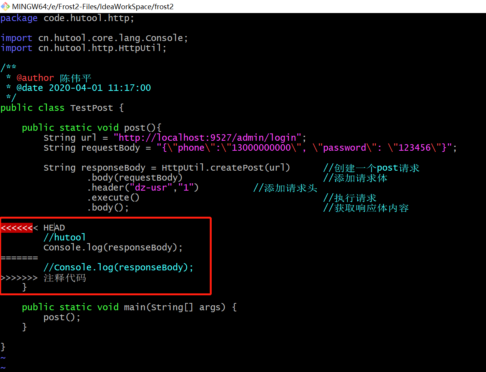
3.1.4、合并冲突（rebase）¶
手动解决完冲突后，提交代码到暂存区表示冲突解决完成。查看当前Git状态如下：
frost2@frost2-pc MINGW64 /e/Frost2-Files/IdeaWorkSpace/frost2 (master|REBASE 1/1)
$ git add src/main/java/code/hutool/http/TestPost.java
frost2@frost2-pc MINGW64 /e/Frost2-Files/IdeaWorkSpace/frost2 (master|REBASE 1/1)
$ git status
rebase in progress; onto 8c4202d
You are currently rebasing branch 'master' on '8c4202d'.
(all conflicts fixed: run "git rebase --continue")
Changes to be committed:
(use "git reset HEAD <file>..." to unstage)
modified: src/main/java/code/hutool/http/TestPost.java
解决完成通过命令继续让Git进行合并。此时本地分支代码比远程代码超前一次提交，执行git push将本地变更同步到远程仓库，至此代码冲突就解决完成了。
frost2@frost2-pc MINGW64 /e/Frost2-Files/IdeaWorkSpace/frost2 (master|REBASE 1/1)
$ git rebase --continue
Applying: 注释代码
3.1.5、合并冲突（merge）¶
同样需要手动解决冲突，然后将冲突文件添加到暂存区以表示冲突解决完成。操作如下：
frost2@frost2-pc MINGW64 /e/Frost2-Files/IdeaWorkSpace/frost2 (master|MERGING)
$ git add src/main/java/code/hutool/http/TestPost.java
frost2@frost2-pc MINGW64 /e/Frost2-Files/IdeaWorkSpace/frost2 (master|MERGING)
$ git status
On branch master
Your branch and 'origin/master' have diverged,
and have 1 and 1 different commits each, respectively.
(use "git pull" to merge the remote branch into yours)
All conflicts fixed but you are still merging.
(use "git commit" to conclude merge)
Changes to be committed:
modified: src/main/java/code/hutool/http/TestPost.java
接下来的操作与rebase有所不同，执行git commit合并冲突，执行后跳转到下图所示界面中，图中红框部分为本次合并的注释信息。更改为自己本次合并的注释信息后，保存退出即可。
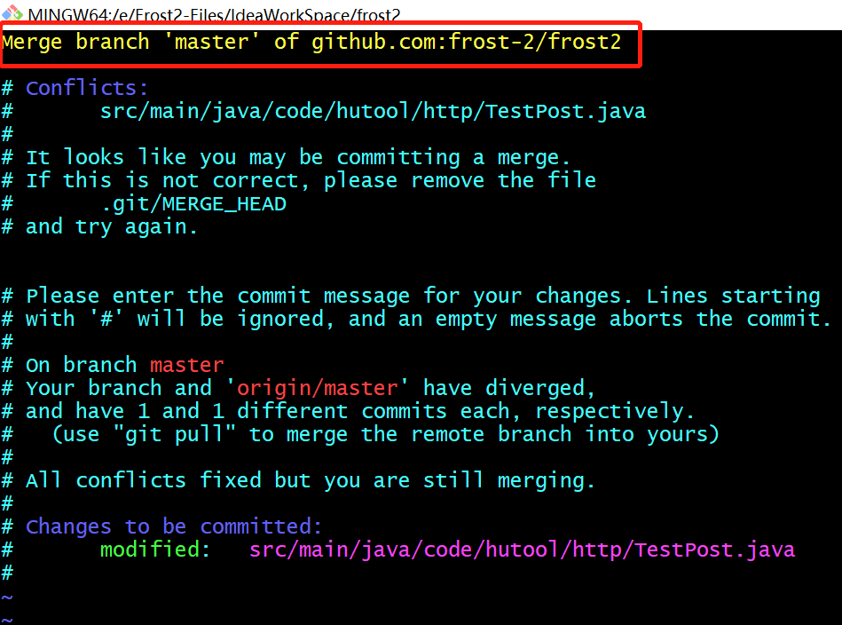
此时代码冲突就解决完成了，查看现在的Git仓库状态，可以看到当前分支比远程分支超前两次提交。此时我们执行git push将本地变更同步到远程仓库即可。
frost2@frost2-pc MINGW64 /e/Frost2-Files/IdeaWorkSpace/frost2 (master)
$ git status
On branch master
Your branch is ahead of 'origin/master' by 2 commits.
(use "git push" to publish your local commits)
nothing to commit, working tree clean
注: 细心的人会注意到，merge合并冲突解决后本次分支领先远程分支两次提交，而rebase领先一次提交。其实就是merge和rebase的区别，merge会将本地分支和远程分支的代码合并到一个新的节点。
此时git提交记录如下：
frost2@frost2-pc MINGW64 /e/Frost2-Files/IdeaWorkSpace/frost2 (master)
$ git log --graph -n 3
* commit 357c6610a887ca86d26f29521e33de4364fe2f90 (HEAD -> master)
|\ Merge: de6567b 1a831c3
| | Author: frost2 <frost2@163.com>
| | Date: Sat Dec 25 19:43:58 2021 +0800
| |
| | Merge branch 'master' of github.com:frost-2/frost2
| |
| * commit 1a831c30d5beb39767ce01d16ea2f2e9e3eb80c9 (origin/master, origin/HEAD)
| | Author: frost-2 <59042444+frost-2@users.noreply.github.com>
| | Date: Sat Dec 25 19:25:11 2021 +0800
| |
| | Update TestPost.java
| |
* | commit de6567bfa033328c182d798bf2bf7860e2d0e960
|/ Author: frost2 <frost2@163.com>
| Date: Sat Dec 25 19:27:56 2021 +0800
|
| update file
3.1.6、Git合并提示无修改¶
rebase合并时，如果你修改后的冲突文件和远程仓库的恰好一致，就会出现如下提示。此时执行git rebase --skip即可。注merge合并不会出现这种情况。
frost2@frost2-pc MINGW64 /e/Frost2-Files/IdeaWorkSpace/frost2 (master|REBASE 1/1)
$ git rebase --continue
Applying: 注释代码
No changes - did you forget to use 'git add'?
If there is nothing left to stage, chances are that something else
already introduced the same changes; you might want to skip this patch.
Resolve all conflicts manually, mark them as resolved with
"git add/rm <conflicted_files>", then run "git rebase --continue".
You can instead skip this commit: run "git rebase --skip".
To abort and get back to the state before "git rebase", run "git rebase --abort".
frost2@frost2-pc MINGW64 /e/Frost2-Files/IdeaWorkSpace/frost2 (master|REBASE 1/1)
$ git status
rebase in progress; onto 8c4202d
You are currently rebasing branch 'master' on '8c4202d'.
(all conflicts fixed: run "git rebase --continue")
nothing to commit, working tree clean
3.2、分支冲突合并¶
现规定release分支只用于合并分支，不能直接提交代码。
假设现在有一个分支release_2112，还有两个分支feature_iss01和feature_iss02，我们在这两个分支上各自进行开发，开发完成后将这两个分支合并到release_2112分支上。
3.2.1、合并分支¶
此时如果两个分支都改到了同一个文件，那么将其中一个合并到release_2112分之后，再合并另一个分支时就会报合并冲突。具体操作如下，首先执行git checkout release_2112命令切换分支，然后依次执行git merge feature_iss01和git merge feature_iss02命令将分支合并到release_2112分支。
frost2@frost2-pc MINGW64 /e/Frost2-Files/frost2 (release_2112)
$ git merge feature_iss01
Updating 597d0f4..1eab2da
Fast-forward
src/main/java/code/hutool/core/test.txt | 2 +-
1 file changed, 1 insertion(+), 1 deletion(-)
现在我们再合并分支feature_iss02到release_2112
$ git merge feature_iss02
Auto-merging src/main/java/code/hutool/core/test.txt
CONFLICT (content): Merge conflict in src/main/java/code/hutool/core/test.txt
Automatic merge failed; fix conflicts and then commit the result.
查看Git状态，可以看到是因为feature_iss01和feature_iss02都改了test.txt文件，所以合并冲突了
frost2@frost2-pc MINGW64 /e/Frost2-Files/IdeaWorkSpace/frost2 (release_2112|MERGING)
$ git status
On branch release_2112
You have unmerged paths.
(fix conflicts and run "git commit")
(use "git merge --abort" to abort the merge)
Unmerged paths:
(use "git add <file>..." to mark resolution)
both modified: src/main/java/code/hutool/core/test.txt
no changes added to commit (use "git add" and/or "git commit -a")
3.2.2、编译冲突文件¶
该部分操作与2.1.4节类似，手动解决冲突文件的内容然后保存退出。
3.2.3、合并冲突¶
该部分操作与2.1.5节类似。手动解决冲突后先git add冲突文件，表示冲突解决完成，再执行git commit命令合并冲突。至此分支合并冲突就解决完成了。
后续开发只要以release分支为基础新建出分支开发即可。但是如果我们的release_2112已经有对应主要开发分支feature_2112，那么就需要将release_2112分支合并到feature_2112分支，使两个分支代码一致。如果不幸又出现了冲突再按照上述步骤操作一遍即可。
4、Git工作模式¶
4.1、图示¶
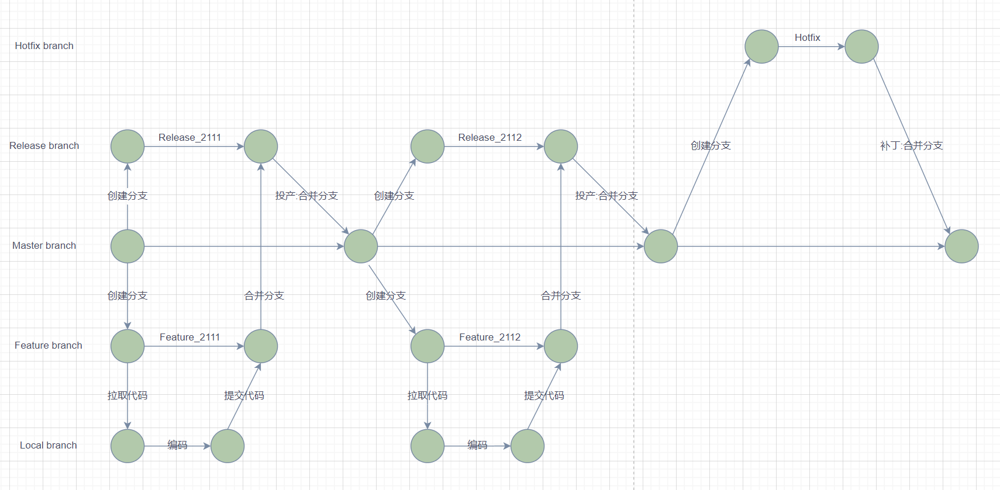
分支类型：
- 主干分支(master)：生产对等分支，要求代码和生产现状保持一致，不允许随便提交代码到主干分支。
- 特性分支(feature)：为了完成需求/问题/任务从最新的主干分支上创建的分支。规定以feature开头命名。
- 发布分支(release)：经特性分支合并形成，用于功能投产，投产成功后合并到主干分支。规定以release开头命名。
- 补丁分支(hotfix)：用于解决投产后出现的生产问题，规定以hotfix开头命名。补丁分支是一种特殊的特性分支。
4.2、开发规则¶
-
规则一：开发前从主干分支创建特性分支
-
规则二：合并特性分支形成发布分支
-
规则三：投产后合并发布分支到主干分支
-
规则四：投产出现问题，将发布分支合并到从主干分支创建补丁分支解决问题
三、Git底层命令¶
1、.git目录¶
1.1、git版本¶
本文使用Git版本为：
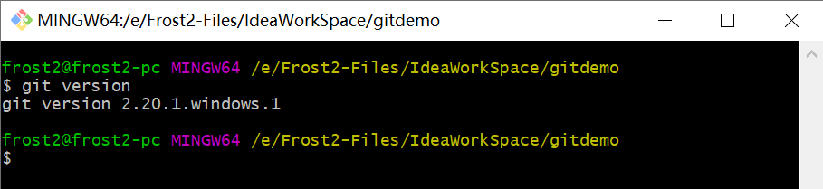
1.2、.git目录内容说明¶
当你在一个新目录或已有目录内执行 git init 时，git 会创建一个 .git 目录，几乎所有 git 存储和操作的内容都位于该目录下。新建的.git目录中不是包括下图的index文件的，当git第一个向暂存区添加内容时才会创建该文件。
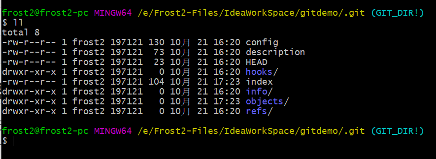
.git目录下文件或文件夹作用如下：
| 文件/文件夹 | 说明 |
|---|---|
| config | config 文件包含了项目特有的配置选项。 |
| description | description 文件仅供 GitWeb 程序使用，所以不用关心这些内容。 |
| HEAD | HEAD 文件指向当前分支 |
| hooks/ | hooks 目录保存了客户端或服务端钩子脚本。 |
| index | index 文件保存了暂存区域信息 |
| info/ | info 目录保存了一份不希望在 .gitignore 文件中管理的忽略模式 (ignored patterns) 的全局可执行文件。 |
| objects/ | objects 目录存储所有数据内容 |
| refs/ | refs 目录存储指向数据 (分支) 的提交对象的指针 |
2、git对象¶
2.1、blob对象¶
git 是一套内容寻址文件系统。这种说法的意思是，Git 从核心上来看不过是简单地存储键值对（key-value）。它允许插入任意类型的内容，并会返回一个键值，通过该键值可以在任何时候再取出该内容。可以通过底层命令 hash-object 来实现这点，传一些数据给该命令，它会将数据保存在 .git 目录下的objects文件夹下并返回表示这些数据的键值。
参数 -w 指示 hash-object 命令存储 (数据) 对象，若不指定这个参数该命令仅仅返回键值。--stdin 指定从标准输入设备 (stdin) 来读取内容，若不指定这个参数则需指定一个要存储的文件的路径。该命令输出长度为 40 个字符的校验和。这是个 SHA-1 哈希值——其值为要存储的数据加上一种头信息的校验和。
查看object下的所有文件。
可以在 objects 目录下看到一个文件。git会为每份内容都生成一个文件，取该内容与特定头信息的SHA-1校验和，并以该校验和前两个字符为名称创建子目录，并以 (校验和) 剩下 38 个字符为名称创建文件(保存至子目录下)。
通过 cat-file 命令可以查看保存数据信息。 -p ：展示文件内容、-t:展示文件类型，-s：展示文件大小。
故通过git hash-object生成的保存文件内容的对象称为blob对象。
2.2、tree对象¶
tree对象可以存储文件名，同时也允许存储一组文件。一个单独的 tree 对象包含一条或多条 tree 记录，每一条记录含有一个指向 blob 或子 tree 对象的 SHA-1 指针，并附有该对象的权限模式 (mode)、类型和文件名信息。
从概念上来讲，Git 保存的数据如下图所示：
举例：
初始化git，并创建一个文件
$ git init
Initialized empty Git repository in E:/Frost2-Files/IdeaWorkSpace/gitdemo/.git/
$ echo 'version 1' > test.txt
将文件内容保存到git，并生成SHA-1检验和
$ git hash-object -w test.txt
warning: LF will be replaced by CRLF in test.txt.
The file will have its original line endings in your working directory
83baae61804e65cc73a7201a7252750c76066a30
将SHA-1检验和保存到暂存区
生成树对象
查看该树对象
$ git cat-file -p d8329fc1cc938780ffdd9f94e0d364e0ea74f579
100644 blob 83baae61804e65cc73a7201a7252750c76066a30 test.txt
此时的暂存区和对象库如下：
$ git ls-files -s
100644 83baae61804e65cc73a7201a7252750c76066a30 0 test.txt
$ find .git/objects/ -type f
.git/objects/83/baae61804e65cc73a7201a7252750c76066a30
.git/objects/d8/329fc1cc938780ffdd9f94e0d364e0ea74f579
现在git保存的数据如下图所示：
接下来更新test.txt到版本二，并将修改添加到暂存区
$ echo 'version 2' > test.txt
$ git update-index test.txt
warning: LF will be replaced by CRLF in test.txt.
The file will have its original line endings in your working directory
此时的暂存区和对象库如下：
$ git ls-files -s
100644 1f7a7a472abf3dd9643fd615f6da379c4acb3e3a 0 test.txt
frost2@frost2-pc MINGW64 /e/Frost2-Files/IdeaWorkSpace/gitdemo (master)
$ find .git/objects/ -type f
.git/objects/1f/7a7a472abf3dd9643fd615f6da379c4acb3e3a
.git/objects/83/baae61804e65cc73a7201a7252750c76066a30
.git/objects/d8/329fc1cc938780ffdd9f94e0d364e0ea74f579
生成树对象，并查看
$ git write-tree
2f39845a4a2c3ad86adebb00b1ddabd959c131c4
$ git cat-file -p 2f39845a4a2c3ad86adebb00b1ddabd959c131c4
100644 blob 1f7a7a472abf3dd9643fd615f6da379c4acb3e3a test.txt
现在git保存的数据如下图所示：
现在来点更有趣的，你可以用 read-tree 命令将 tree 对象读取到暂存区域中。通过传一个 --prefix 参数给 read-tree，将一个已有的 tree 对象作为一个子 tree 读到暂存区域中：
查看暂存区
$ git ls-files -s
100644 83baae61804e65cc73a7201a7252750c76066a30 0 bak/test.txt
100644 1f7a7a472abf3dd9643fd615f6da379c4acb3e3a 0 test.txt
生成树对象
查看树对象
$ git cat-file -p b9c6a44acc8cf4303f3b8a7520e15df999e6057d
040000 tree d8329fc1cc938780ffdd9f94e0d364e0ea74f579 bak
100644 blob 1f7a7a472abf3dd9643fd615f6da379c4acb3e3a test.txt
现在git保存的数据如下图所示：
graph TB
tree(tree:b9c6a4) --> blob2(blob:1f7a7a) -->|内容| content2[version 2]
tree --> tree1(tree:d8329f) --> blob1(blob:83baae) -->|内容| content1[version 1]
2.3、commit对象¶
现在我们有三个tree对象，它们指向了项目的不同快照，可是先前的问题依然存在：必须记往三个 SHA-1 值以获得这些快照。也没有关于谁、何时以及为何保存了这些快照的信息。commit 对象为你保存了这些基本信息。
要创建一个 commit 对象，可以使用 commit-tree 命令，指定一个 tree 的 SHA-1，如果有任何前继提交对象，也可以指定。
查看该commit对象
$ git log --stat 81e8e6d220ca1b70b9ffb0e01b80dc7f11dcb40f
commit 81e8e6d220ca1b70b9ffb0e01b80dc7f11dcb40f
Author: frost2 <frost2@163.com>
Date: Sun Oct 24 20:34:54 2021 +0800
first commit
test.txt | 1 +
1 file changed, 1 insertion(+)
创建第二个commit对象，并第一个commit对象为前继提交对象。
$ echo 'second commit' | git commit-tree 2f3984 -p 81e8e6d220ca1b70b9ffb0e01b80dc7f11dcb40f
5298972dd73fa4a18dc51c811a60a8dfe4d770b8
查看该对象
$ git log --stat 5298972dd73fa4a18dc51c811a60a8dfe4d770b8
commit 5298972dd73fa4a18dc51c811a60a8dfe4d770b8
Author: frost2 <frost2@163.com>
Date: Sun Oct 24 20:42:46 2021 +0800
second commit
test.txt | 2 +-
1 file changed, 1 insertion(+), 1 deletion(-)
commit 81e8e6d220ca1b70b9ffb0e01b80dc7f11dcb40f
Author: frost2 <frost2@163.com>
Date: Sun Oct 24 20:34:54 2021 +0800
first commit
test.txt | 1 +
1 file changed, 1 insertion(+)
注意：现在使用git log命令会显示当前分支没有提交，如下
3、git reference¶
现在你可以执行像 git log 529897 这样的命令来查看完整的历史，但是这样你就要记得 529897 是你最后一次提交，这样才能在提交历史中找到这些对象。所以你需要一个文件来用一个简单的名字来记录这些 SHA-1 值，这样你就可以用这些指针而不是原来的 SHA-1 值去检索了。
在 Git 中，我们称之为“引用”（references 或者 refs，译者注）。你可以在 .git/refs 目录下面找到这些包含 SHA-1 值的文件。在这个项目里，这个目录还没不包含任何文件，但是包含这样一个简单的结构：
Git 提供了一个安全的命令 update-ref帮助我们实现将SHA-1检验和添加到refs中。
此时我们就可以直接使用git log查看日志，而不需要记录最后一个提交的SHA-1检验和。
$ git log
commit 5298972dd73fa4a18dc51c811a60a8dfe4d770b8 (HEAD -> master)
Author: frost2 <frost2@163.com>
Date: Sun Oct 24 20:42:46 2021 +0800
second commit
commit 81e8e6d220ca1b70b9ffb0e01b80dc7f11dcb40f
Author: frost2 <frost2@163.com>
Date: Sun Oct 24 20:34:54 2021 +0800
first commit
基本上 Git 中的一个分支其实就是一个指向某个工作版本一条 HEAD 记录的指针或引用。你可以用这条命令创建一个指向第二次提交的分支：
此时查看日志如下：
$ git log test
commit 81e8e6d220ca1b70b9ffb0e01b80dc7f11dcb40f (test)
Author: frost2 <frost2@163.com>
Date: Sun Oct 24 20:34:54 2021 +0800
first commit
每当你创建新分支时，Git 基本上就是执行 update-ref 命令，把你现在所在分支中最后一次提交的 SHA-1 值，添加到你要创建的分支的引用。
本人会经常更新博客，并在文章附上更新时间！ 转载请附上原文出处链接和本声明。 本文链接：https://blog.csdn.net/weipinggg/article/details/122101866 欢迎大家关注我的公众号：frost2